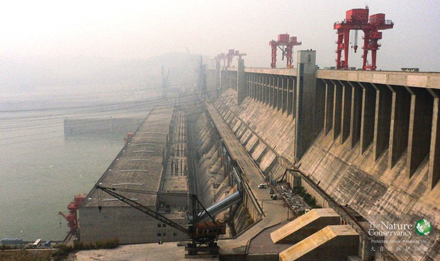

项目概览
长江®TNC
背景
长江，在中华民族的历史上有着举足轻重的位置。
从滚滚长江东逝水的壮阔，到共饮长江水的温婉，这条世界第三长河，滋养了中华儿女的体魄，丰富了炎黄子孙们的精神，成为了我们的精神图腾。
今天，占国土面积1/5的长江流域不仅继续养育了全国1/3的人口，生产了全国1/3的粮食，而且还是中国经济增长最有活力、最具潜力的地区。
从青藏高原的格拉丹东雪山，到险峻的横断山脉再到平缓的长江中下游平原，广阔的流域范围使长江成为了生物多样性的宝库。包括中华鲟、白暨豚、白鲟等珍稀水生物在内的370多种鱼类、124种特有物种均栖息于此。
然而随着中国经济的高速发展，特别是快速大规模的水电开发，曾经自由奔腾的河流慢慢归于平静，千万年来依赖自然节律，河流水文变化而繁衍生息的鱼类，渐渐消失在长江中；频繁地航运、挖沙、人类活动，使长江的淡水栖息地受到严重破坏，河流生态健康日益恶化，不仅中华鲟等珍稀水生物的生存受到威胁，最常见的“四大家鱼”等经济鱼类的生存条件也面临困境。
目前，仅“四大家鱼”的卵苗发生量就已经下降了九成，长江的生态健康已经到了非常危急的时刻，我们必须马上行动起来，改变传统的水资源管理和开发模式，重新探索一条“人水和谐”的新模式，建立人类与长江之间和谐共荣的关系。
目标
TNC长江保护项目主要针对长江目前所面临的水电开发、栖息地破坏、过度捕捞和全球气候变化等问题开展保护工作，致力于通过改变传统大坝调度运行方式和洪泛平原管理方式来优化水力发电和洪水管理，从而尽可能减少对于人类社会和野生生物的影响。
TNC思考
大坝一方面提供发电。另一方面也对河流的自然流量造成了负面影响，给水生生态系统的健康带来损伤。造成这一问题的症结所在是大坝在传统的防洪工作中所扮演的角色。防洪运行加剧了对水流自然流量模式的影响，进而导致了下游环境、生态、社会等等问题的出现，包括重要生态系统功能的退化。
同时，中型大坝的防洪库容也逐渐侵蚀掉了蓄滞洪区的功能。在中等洪水规模的年份里，洪泛平原的蓄滞洪区愈发依赖于防洪库容，但在大洪水发生时，蓄滞洪区则十分脆弱。
此外，在目前的防洪规划中，洪泛平原湿地恢复工作及其潜在的生态、经济价值都被忽略。
对防洪库容的过度依赖也带来了巨大的水能发电的机会成本，即造成了水电这种清洁能源产量的减少，由水电产生的收入的缩减，而这些收入可以用来支持全流域内先进的洪水风险管理和生态保护工作。与此同时，蓄滞洪区也因为缺乏投入而疏于必要的管理与维护。
多年以来，长江各支流上缺乏规划或规划不足的小水电开发给淡水生态系统带来了严重影响。小水电破坏了水文连通性及原始生境，却被证实并无显著经济功效，在生态与经济的双重意义上均非可持续。重新评估全流域内的小水电开发对于保护河湖连通性和重要的淡水生态环境非常关键。矫正现状急需一系列有关可持续发展、建设、评估的文件、规划、协议等出台并实施。最终，现存小水电的拆除或移位可能会为破碎化的河流生态系统提供一套实际可操作的恢复方案。
减轻大坝的生态影响

三峡大坝®TNC
TNC 和合作伙伴们，建议从额外的发电收益中提取一定比例设立水电可持续发展基金，为长江生态保护提供可持续的资金支持。这些资金将用于：防洪风险管理，分蓄洪区建设和洪水风险损失补偿，恢复天然湖泊和湿地功能，提高中下游的蓄滞洪能力，实施长江流域生态与环境监测和适应性管理，创建淡水生态保护区域网络。
生态流
通过多个大坝生态流推荐方案的制定与实施，推动生态流政策的制订和生态友好水电运行方式的广泛实施。项目正在与三峡总公司合作，制订和实施金沙江下游四座梯级电站的生态流推荐方案，以此减小四座梯级电站对下游鱼类保护区的影响，维持水生生物适当的栖息条件。同时，TNC与三峡总公司正在协商针对三峡工程本身开展生态流推荐方案的制订和实施工作。
水电可持续发展基金
为缓解长江生态保护与防洪需求及水电开发之间的矛盾，TNC与中国三峡总公司多年来一直合作推进可持续水电基金生态补偿机制的研究。这一补偿机制建议通过合理调整流域洪水防控体系运行模式，通过合理的金融和经济模型设计，实现流域洪水风险控制能力的提升，夏季用电高峰期水电产能的提高，以及大坝运行对自然生态流量影响的降低，获得三个需求间的平衡。
更多内容，请下载《水电可持续发展基金报告》
保护以鱼类为代表的生物多样性
鱼类监测®TNC
长江是中国水生生物最为丰富的河流。上世纪开工建设的葛洲坝和三峡水库，截断了多种鱼类的洄游通道，淹没了大量的产卵场。大中小规模的各类水坝，为了满足防洪发电的需求，又会对江河原有的自然水流情况造成影响，从而改变淡水生物的栖身环境，影响它们的生存。
TNC长江项目正与众多合作伙伴们一起努力，通过科学的保护方法，积极协调流域内防洪需求、水电开发与生态保护之间的冲突与矛盾，引入生态流，降低大坝运行对江河自然流量的影响，改善退化的淡水生态系统，尽力恢复长江濒危鱼类和主要经济鱼类的种群数量。
淡水栖息地
确定长江流域淡水生态系统保护优先区，加强淡水保护区的能力建设，提升管理的有效性，恢复重要淡水生态系统栖息地，形成更广泛和有效的淡水保护区网络。上海崇明东滩鸟类国家级自然保护区和长江上游珍稀和特有鱼类国家级保护区是TNC长江保护项目正在开展的实地保护示范点。
鱼类的监测
加强长江河流健康监测能力的建设，推动河流健康监测网络的形成，是确保保护策略的建立和调整是基于真实可靠的保护信息的前提。
长江保护项目已与长江渔业资源管理委员会、长江水利委员会、美国地质调查局共同建立了河流健康监测合作伙伴关系，在长江上游珍稀和特有鱼类保护区等重要河段开展了联合监测。
2012年5月3日，长江渔业资源管理委员会与TNC大河伙伴项目共同签署了“长江-密西西比河绿色合作伙伴意向书”。这个合作将促进两条大河流域间生态保护经验的交流和技术分享，提高各自的淡水生态保护效果。例如密西西比河科学系统的监测方法的引进已经为长江流域监测方法的改进和系统的建立提供实质性的帮助，以及长江流域对鲢鱼（四大家鱼之一，重要的经济型鱼类）的生理和发育基础研究对密西西比河流域控制外来入侵物种提供支持和协助等。
在大河伙伴项目的带动下，合作伙伴们的监测水平和人员能力有了显著提高。TNC连续四年参与并支持的中国水产科学研究院长江水产研究所“四大家鱼增殖放流效果评估和监测项目”，就是大河伙伴项目的一个成果。过去三年的研究结果表明，亲本鱼放流对长江渔业资源贡献卓越，监利断面卵苗径流量已从0.42亿尾回升到4亿多尾。
渔民生计调查
出于捕捞强度对渔业保护的考虑，长江流域已经实行每年阶段性禁渔期十年，十年间的禁渔政策是否达到了最初的目标，对渔民生产生活又产生了哪些影响？禁渔期应该如何调整，调整后的禁渔期又能发挥多大作用？为了解决这些问题，有必要对长江渔民生产生活状况作针对性的调查。因此，TNC和长江渔业资源管理委员会一起对长江特定江段一周年的渔获物数量和结构、渔民捕捞努力量、渔民捕捞收入等指标进行了调查，并在此基础上评估长江禁渔期调整对渔民生产生活的影响方式和影响程度,并针对禁渔期调整方案的实施提出相关建议。
更多信息，请下载长江渔民调查
长江合江段中华沙鳅的年龄与生长研究
中华沙鳅( Botia superciliaris) 隶属于鳅科沙鳅亚科，主要分布于长江中上游水系，具有较高的经济价值。20 世纪80 年代，关于贵州、云南、四川等地中华沙鳅的外形、分布和生活习性曾有零星报道。近年来，由于中华沙鳅的资源量减少，市场价格不断升高，引起了较多研究人员的关注，陆续开展了中华沙鳅的年龄和生长、遗传多样性、繁殖生态学、肝胰脏结构、消化道结构、人工繁殖技术以及金沙江下游资源现状等方面的研究。关于中华沙鳅的年龄与生长，迄今仅有赵天等利用长江上游江津段采集的91尾个体开展了中华沙鳅生长方程初步模拟，并认为耳石适宜用于其年龄鉴定。为更好地了解中华沙鳅的资源状况，我们在目前长江上游中华沙鳅捕捞量较大的合江江段采集标本，对其年龄和生长进行了研究。
更多信息，请下载长江合江段中华沙鳅的年龄与生长研究

８月２６日，大自然保护协会(TNC)和中国水力发电工程协会、国际水电协会共同在成都举办水电可持续评估规范培训班。国内30多家大型水电企业、规划机构和大学的专家参加了培训。
8月18日，大自然保护协会（TNC）可持续水电中心邀请中美生态保护及可持续水电专家、国内部分海外水电开发企业代表讨论交流中国水电发展面临的挑战与发展方向。
5月19日，世界水电大会在北京开幕。大自然保护协会（TNC）淡水项目全球总监朱里奥.波凯特(Giulio Boccaletti) 博士接受中央电视台记者采访时，对中国水电企业寄予了很高期望。
水电是迄今为止世界上最主要的低碳电力来源，并将成为既可满足未来能源需求又不打破气候平衡的多种能源解决方案之一。但水电开发也已导致淡水生物种类和生态系统服务功能的急剧减少，如何减少在全球扩张的水电工程对生态系统的威胁是当前最紧迫的问题。
4月12日，中国长江三峡集团公司举行第57次中华鲟放流活动，共放流大规格子二代中华鲟3000尾。中华鲟研究所将首次在沿江各监测站采用实时传输技术，完整监测放流中华鲟的洄游信息。
对于“名鱼”中华鲟来说，相信很多人都听说过它，But，你真的知道这种神奇的鱼类到底有哪些独特的地方吗？这事说来话长，请跟随我们的《识骨“鲟”踪》系列，探索中华鲟的神秘与魅力吧。
12月
17
中国TNC专家应邀参与了水利部国际经济技术合作中心组织专家到云南省、重庆市做全球环境基金(GEF)赠款----生物多样性保护中国水利行动项目选点考察，以期在未来的GEF项目中提供生物多样性和生态流等方面的技术支持。
由美洲开发银行委托大自然保护协会（TNC）举办的"中国-拉丁美洲水电可持续发展研讨会"，7月19日在秘鲁首都利马闭会。三峡集团、中国电力建设集团、国家开发银行、水电水利规划设计总院、环保部环境规划院的代表，与哥伦比亚、巴西、墨西哥、哥斯达黎加等国家的专家及电力公司代表会聚利马，共同围绕中国水电行业在拉丁美洲规划、和建造人水和谐的水利工程出谋划策。
“ON AND ON——江河之上”主题影展昨日转战上海。钢琴家盛原在影展现场演奏了《平湖秋月》与《欢乐岛》，拥有百年历史的钢琴发出阵阵清音，拉开了影展序幕。
4月22日地球日，中国TNC今年主题活动“On and On”中国江河上的大坝影展来到杭州阿里园区。“中国江河上的大坝”又一次生动清晰且震撼心灵地走进人们的视野。
4月13日上午，中华鲟增殖放流活动在湖北宜昌的江边举行，2000多尾做了可追踪标记的子二代中华鲟被送入江中，从这里开始，它们将游向大海。
那条我2005年时看到的充满野性、泥沙翻滚的长江已经不见了。 现在的长江，缓缓地流淌着，感觉很忧郁，上周我见到她时，她看起来水质更干净和驯服了。
8月
16
2008年至2013年是TNC与三峡集团第一期五年的合作，这五年其实是一个起始阶段，双方的合作是比较有效的。TNC最初的出发点是尽量减少金沙江下游四个梯级水电站（注：乌东德水电站、白鹤滩水电站、溪洛渡水电站、向家坝水电站）未来可能对长江上游珍稀特有鱼类国家级自然保护区栖息地（下称长江上游鱼类保护区）的影响。
2013年8月15日，在美国华盛顿，大自然保护协会（The Nature Conservancy，下称TNC）与中国长江三峡集团公司（下称三峡集团）宣布签署2013年至2018年合作备忘录（MOU），双方将致力于让水力发电更可持续。
“我们这里已经没有靠捕鱼为生的渔民了。”在长江中游监利县城的鄢铺码头，一些父辈曾是渔民的年轻人说，当地人早都弃渔而靠其他手段谋生。当时他们正在观看在江边举办的盛大的增殖放流活动。
一个正在酝酿的水电项目有可能使“长江上游珍稀特有鱼类国家级自然保护区”遭遇灭顶之灾，这个专家眼中的长江上游鱼类最后的避难所危在旦夕。

面对濒临灭绝的中华鲟, 科研人员费尽千辛万苦，与时间赛跑, 努力拯救它。科学家们是怎么做的呢？请随小编来看一看。
野生中华鲟种群在中华难寻其踪，“国宝鲟”们不能自然繁殖？畸形、男女比例严重失调？“鲟”情面临大危机，这到底是怎么了？
众所周知，历史比长江还古老的大鱼---中华鲟已到濒临灭绝边缘，而人工繁殖、增殖放流被证明是保护中华鲟这一古老珍稀物种生生不息的一种有效手段。
要保护全球具有重要生态价值的陆地和水域，单凭环保组织的努力是不够的，需要全社会力量的投入和支持，而企业正是其中关键的组成部分。企业不仅在生产过程中可能产生对环境直接的影响，负责任的企业还拥有对社会广泛的影响力和号召力。因此与企业合作，不但能直接改善和减轻对环境的影响，还可以通过企业的影响力向更多的人传播环境保护的重要性。
2013年8月15日，TNC与三峡集团签署第二期五年合作计划，这一合作带来一些争议。8月19日，TNC全球淡水项目总监格利奥·博卡拉狄（Giulio Boccaletti）在英国《卫报》撰写评论文章回应此事，我们在此将文章翻译如下。
为了修建小南海水电站，中国要缩小长江上游唯一的珍稀特有鱼类国家级自然保护区，多种长江珍稀特有鱼类将濒临绝境。韩子遇报道。 因大坝的阻隔，很多长江鱼类无法回溯到上游产卵，濒临灭绝。

作为长江中上游的主要干流，金沙江肩负着长江流域的生态屏障，水源涵养和水土保持的使命；与此同时，金沙江上游还是我国最大的天然林区之一，其罕见的完整的自然生态系统和水能富集带，对长江中下游生态的安全起着关键的自然调节作用，可以说，著名的金沙江N字形大拐弯，决定着中国的生态命运。

1994年进入北京师范大学资源环境科学系，2003年北京师范大学环境学院毕业，获得环境科学博士学位。曾就职于水利部南水北调规划与设计管理局。一直关注于水坝工程环境影响，生态可持续水电和淡水生态系统保护。 河流并不仅仅意味着水，河流本身就是生命; 河流的问题也不仅仅是污染，河流涨落规律的改变是致命的，天然的涨落变化是其生命的本底。
2006年，加入TNC中国湿地项目，协助TNC中国湿地项目在云南拉市海和上海崇明东滩开展的湿地保护区保护规划和有效管理项目。现协助开展长江上游鱼类保护区和长江中游四大家鱼的保护和监测等项目活动，并负责TNC大河伙伴项目和农业部长渔委签署的“长江-密西西比河绿色合作伙伴”项目的协调和管理工作。曾多次参加TNC中国保护行动规划方法的培训，在保护对象选择和保护现状综合分析、保护对策制定和成果评估等方面具有经验，参与完成了上海崇明东滩鸟类保护区保护行动规划和长江上游鱼类保护区保护行动规划项目。 杨波博士，毕业于中国科学院东北地理与农业生态研究所，主修环境科学专业。